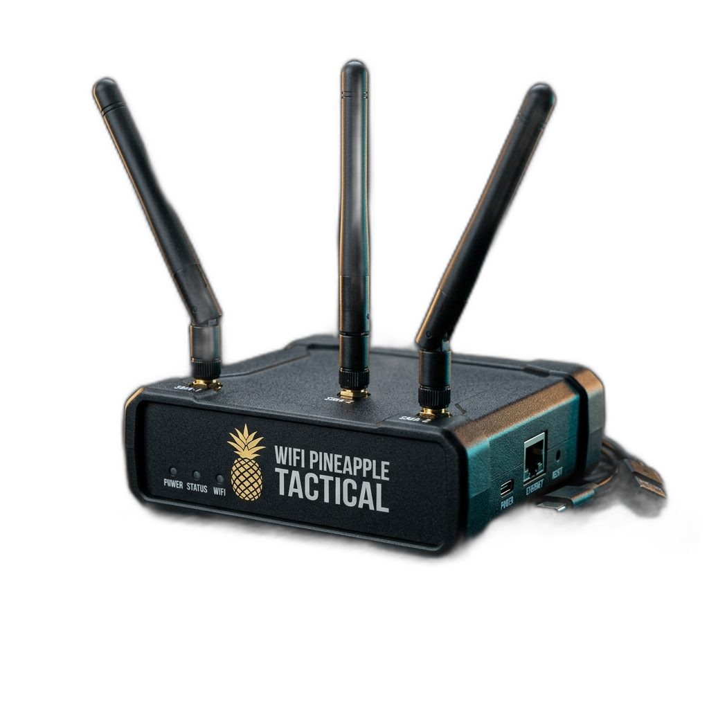
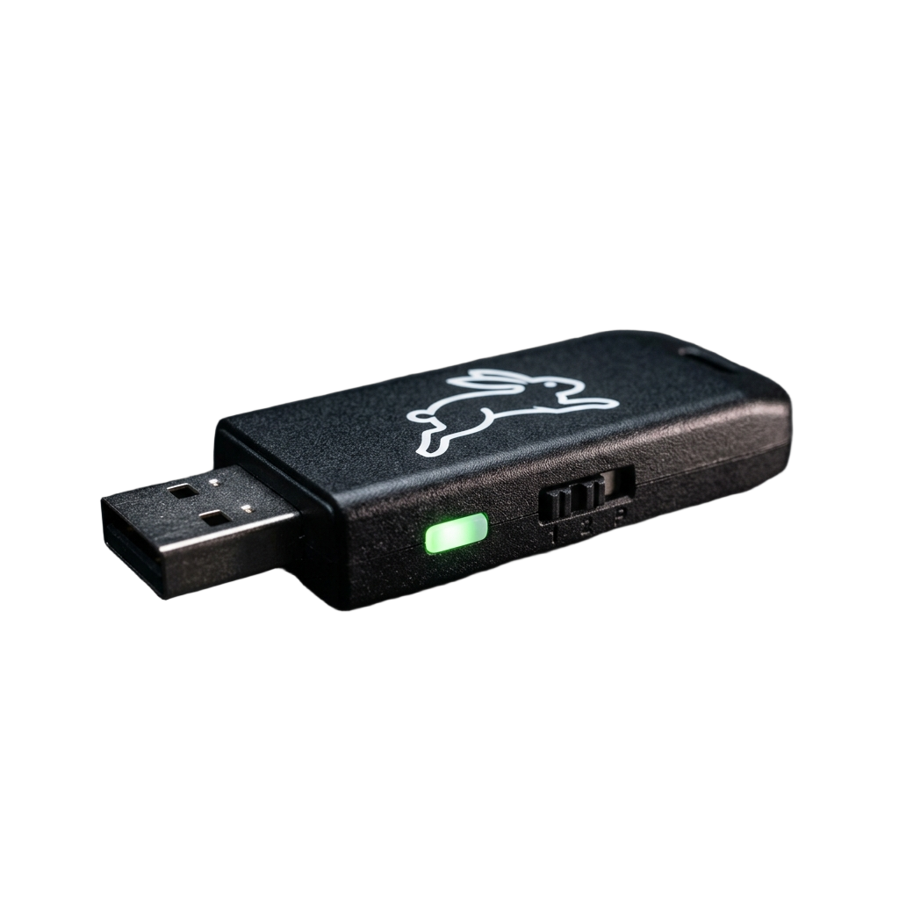
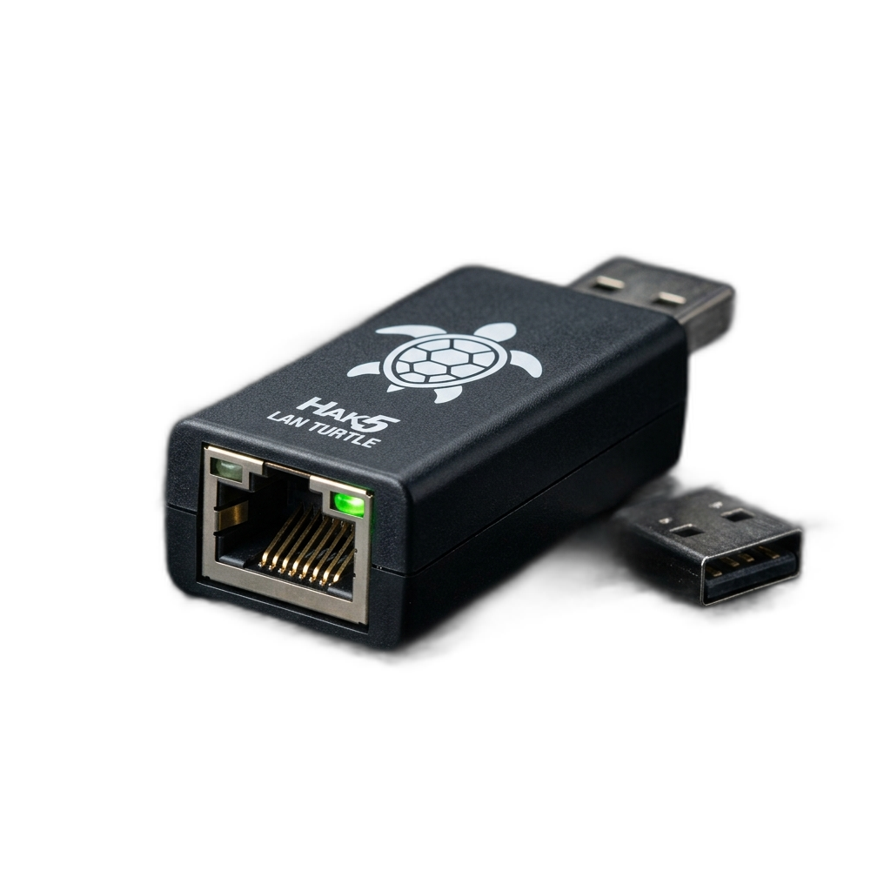
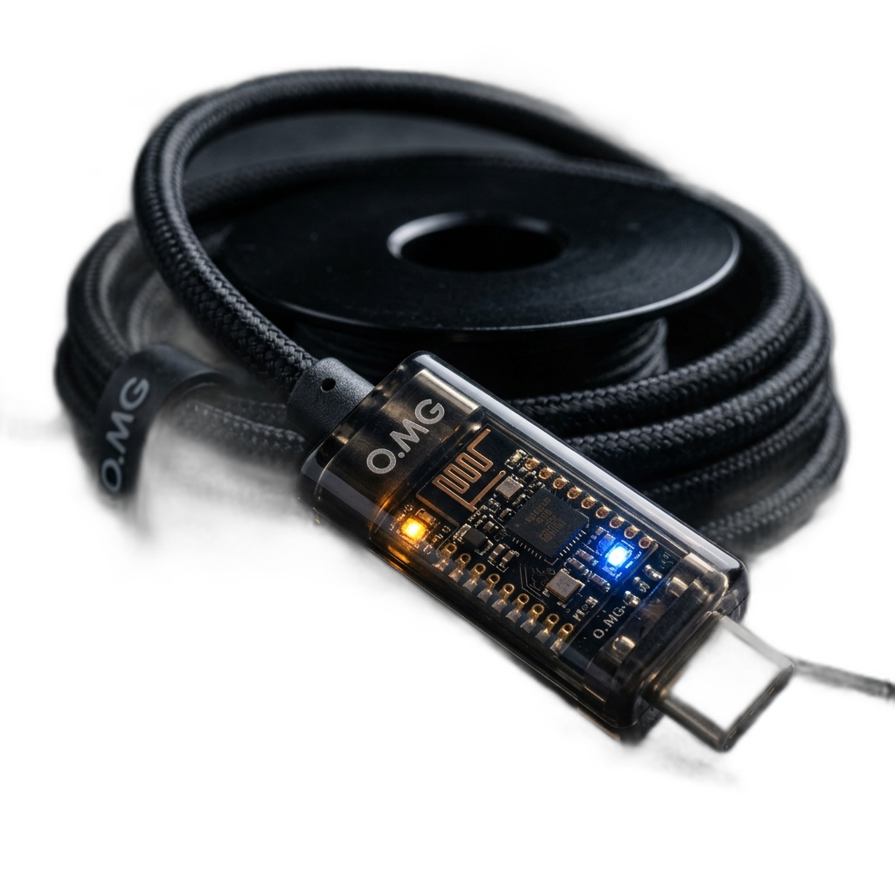
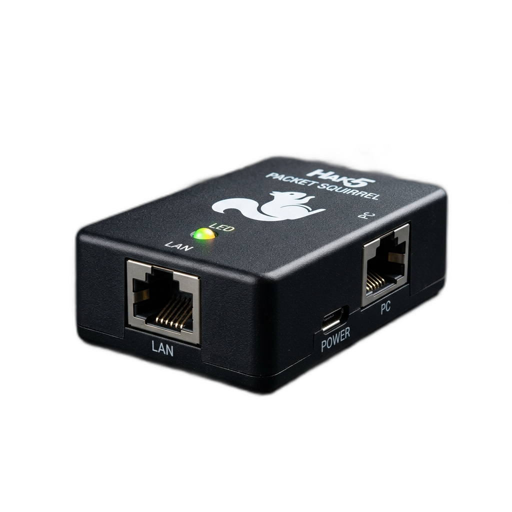
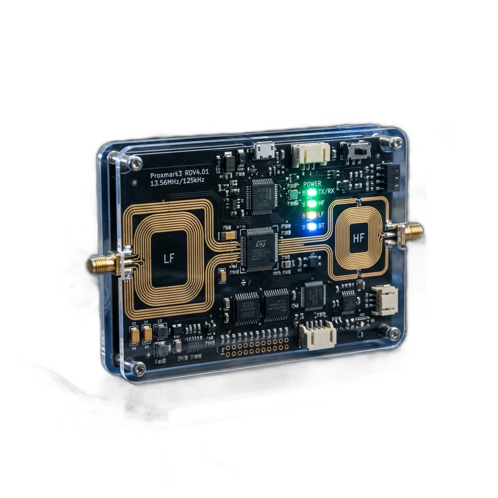

HACKER SEARCH ENGINES & TACTICAL HARDWARE DEVICES
Knowledge is Power. Hack the Planet (Ethically)! A unified classified compendium detailing the Top 10 Physical Penetration Testing Devices (Hak5, Flipper Zero, Proxmark3) alongside the 32 Essential Cybersecurity Search Engines for Internet-wide reconnaissance, exposed credentials, asset mapping, and threat intelligence.

WiFi Pineapple
// Hak5Dual-band (2.4GHz & 5GHz) tactical wireless audit platform. Employs the proprietary PineAP suite to automatically harvest client probe requests, launch Karma attacks, broadcast spoofed SSIDs, deauthenticate authenticated clients, and establish Man-in-the-Middle (MITM) control to capture WPA handshakes and harvest credentials.
Kali NetHunter
// Offensive SecurityOpen-source Android mobile penetration testing overlay with custom kernel support. Delivers 802.11 wireless frame injection, AP mode, one-click HID keyboard attacks (DuckHunter BadUSB), USB Ethernet emulation (MANA Evil AP network hijacking), and Software Defined Radio (SDR) RF sniffing right from a pocket smartphone.
USB Rubber Ducky
// Hak5The definitive Human Interface Device (HID) keystroke injection platform. Because operating systems inherently trust keyboards without requiring driver installation or privilege prompts, the Rubber Ducky executes DuckyScript 3.0 at over 1,000 words per minute to open terminals, disable defenses, exfiltrate credentials, and deploy reverse shells in under 5 seconds.

Bash Bunny
// Hak5A complete Debian Linux computer built inside a USB stick form factor. Features a physical 3-position toggle switch allowing operators to execute distinct multi-vector payloads. Emulates Gigabit USB Ethernet (RNDIS/ECM), keyboard HID, USB Mass Storage, and Serial adapters simultaneously to poison LLMNR/NBT-NS hashes (QuickCreds) in seconds.
Flipper Zero
// Flipper DevicesThe viral multi-protocol hardware swiss army knife. Integrates a 300-928 MHz Sub-GHz transceiver for capturing and replaying wireless signals (garage doors, barrier gates), 125 kHz RFID reader/writer (EM4100, HID Prox door badges), 13.56 MHz NFC (Mifare Classic card emulation), Infrared blaster, BadUSB keystroke injector, and hardware GPIO pins.

LAN Turtle
// Hak5A covert systems administration and penetration testing implant disguised as a generic USB-to-Ethernet adapter. Houses a customized OpenWrt embedded Linux kernel. Connects between a host computer and the local network to quietly sniff traffic, execute DNS poisoning (DNS Spoofing), and establish a persistent Cloud C2 reverse shell over cellular/VPN.

O.MG Cable
// Hak5 / MGLooks and behaves exactly like an authentic OEM smartphone charging cable (Apple Lightning, USB-C, Micro-USB). Concealed inside the molded connector housing is a tiny 32-bit microcontroller, full Wi-Fi radio, and web server. An attacker up to 50 meters away connects via smartphone browser to trigger keystrokes, log input, or drop payloads wirelessly.

Packet Squirrel
// Hak5Pocket-sized hardware Ethernet tap designed for inline packet analysis, automated network sniffing, and secure remote VPN tunneling. Powered by OpenWrt, it sits transparently between network cables. Flipping a 4-position physical switch automatically logs raw PCAP files directly to an attached USB thumb drive or initiates OpenVPN tunnels.

Proxmark3
// RRG / RFIDlerThe industry gold standard dedicated to RFID/NFC protocol exploration and physical access exploitation. Supports dual-frequency: Low Frequency (125 kHz: EM410x, Indala, HID Prox) and High Frequency (13.56 MHz: Mifare Classic, Ultralight, iCLASS). Can sniff radio exchanges between cards and readers, simulate badges, and crack crypto keys via Darkside and Nested algorithms.
Evil Portal
// Open Source / PineAPA modular captive portal attack framework deployed on rogue access points (WiFi Pineapple, ESP8266 Deauther, ESP32, or Raspberry Pi). Forces victims joining the rogue network into a walled garden where all DNS traffic redirects to a realistic login page imitating airport Wi-Fi, hotel portals, Starbucks terms, or corporate Google/Microsoft SSO logins.
Shodan
port:22 country:IN org:"ISP".
Censys
ZoomEye
GreyNoise
ONYPHE
BinaryEdge
FOFA
LeakIX
.env files, public Git repositories (.git/HEAD), open Elasticsearch clusters, and unprotected Redis instances on the public internet.
Criminal IP
Netlas.io
DeHashed
SecurityTrails
DorkSearch
Exploit-DB
Pulsedive
GrayhatWarfare
PolySwarm
URLScan.io
Vulners
Wayback Machine
crt.sh
%.target.com instantly reveals every subdomain ever granted an SSL cert, including internal staging and VPN endpoints.
WiGLE.net
PublicWWW
Hunter.io
{first}.{last}@target.com). Lists verified employee emails with public sources, invaluable for authorized phishing tests and employee recon.